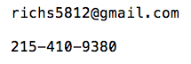

Brightmoor Connection Database Documentation
Below is documentation for the Brightmoor Connection database web application, built using the PHP framework Symfony. There are two main sections: 1) Application Installation, and 2) Restoring the Database From a Backup.
Application Installation
The three main steps in installing the database application are:
1. Set Up a Web Server
These instructions will assume you are installing the database application locally on a computer; however, it could also be installed on a third-party web server hosted by a company like GoDaddy, Bluehost, etc., and accessed by the pantry over the Internet. To date, the pantry has only used a locally installed version using XAMPP.
There are many ways to set up a web server to run locally on one computer. The easiest option that works on Windows, Mac and Linux is to download and install XAMPP. During the installation process, make sure you install at least Apache, MySQL, PHP, and phpMyAdmin. If prompted, allow XAMPP services to run on private networks only (recommended security setting).
2. Create a MySQL Database
You will need to create a MySQL database on your server. There are many ways to do this; if you installed XAMPP, you can follow the instructions below:
- Open XAMPP
- Click the Start button in both the MySQL and Apache rows, then click Admin in the MySQL row. This will open phpMyAdmin in your web browser, which allows you to administer your databases.
- Click Databases in the top menu
- Under 'Create database', enter a name for your database in the 'Database name' field, then click Create. This will create the database.
- To create the database user, click 'Privileges' in the top menu.
- Click 'Add user account'.
- Enter a user name; type
localhostin the Host name field; enter a password. Under 'Database for user account', ensure that the box is checked next to 'Grant all privileges on database your_database_name'. Scroll to the bottom of the page and click 'Go' to create the user account. - Import the most recent database backup file.
Keep the database name, user name and password handy for the application installation (below).
3. Download and Install the Application Files
- Download the application files to your computer.
- Download the zip file, or clone from the GitHub repository
- Save the files in a location accessible by your web server. If you are using XAMPP, you will want to save these files inside the
xampp/htdocsfolder (e.g.xampp/htdocs/chirpDatabase2-master). Tip: there is an 'Explorer' button in the XAMPP control panel that will take you to thexamppfolder. -
Open up a command line application (e.g. Command Prompt on Windows, Terminal on Mac; there is also a shell tool accessible from the XAMPP control panel), and navigate to where you saved the files; enter the top level folder (e.g.
chirpDatabase2-master). List the files in the folder by running the commandlsif you are on Mac or Linux, ordirif you are on Windows. Your terminal application should showapp,bin,src, andwebfolders, among others if you are in the right place. -
Install Composer in this folder using the Command-line installation. You can also install Composer globally; in this case you should substitute
composerwhere you seephp composer.pharin the instructions below. - Run
php composer.phar install. Composer will download files into avendorfolder in the project directory for several minutes, then ask you for login credentials to your database, and the gmail account used by the application's 'forgot password' function. When prompted, enter the following values:database_host: hit Enter to accept the default valuedatabase_port: hit Enter to accept the default valuedatabase_name: the database name you createddatabase_user: the database user you createddatabase_password: the database password you createdmailer_transport:gmailmailer_host: hit Enter to accept the default valuemailer_user: enter the value from heremailer_password: enter the value from here, without the single quote markssecret: hit Enter to accept the default value
- If you see the message 'All assets were successfully installed' with a green background in your terminal, you are ready to proceed to the next step.
Note: If you run into any errors, contact Rich, or Google the errors to find a solution. You can also refer to Symfony's deployment guide for troubleshooting. If you accidentally skipped entering one of the values from the previous step, you may encounter an error message. If this happens, you can add or edit these values in the
parameters.ymlfile located in theapp/configdirectory (I recommend using Notepad++ on Windows, or TextWrangler on Mac to edit this file). Then runphp composer.phar installfrom the command line to try the installation again. - From the command line, run
php bin/console cache:clear --env=prod --no-debug --no-warmup - Run
php bin/console cache:warmup --env=prod - Once this command finishes running, the application should be installed. You can now open a web browser on your computer and go to
http://localhost/your-install-directory/web. For example, if you are using XAMPP, and you installed the project folder atxampp/htdocs/chirpDatabase2-master, you can go to http://localhost/chirpDatabase2-master/web to access the database.
{kind=link}
Additional Installation Steps
User Management
Roslyn should be able to log in using her usual username and password. If you need to create a new user account, run the following command line commands (replace the dummy values with your values):
php bin/console fos:user:create testuser test@example.com p@sswordphp bin/console fos:user:promote testuser --super(this command is required to give the user full access to the database)
app/console from an earlier version of Symfony; you should replace this with bin/console in your commands.
Start XAMPP and the webserver on login
XAMPP must be running with Apache and MySQL for the database application to function, so you should 1) configure XAMPP to start on login, and 2) autostart Apache and MySQL when XAMPP starts up:
- You can Google instructions how to start a program on login for your operating system; here is an example for Windows 7.
- In the XAMPP control panel, click Config, then check the boxes next to Apache and MySQL under Autostart of modules, and click Save.
Automated Database Backups
I highly recommend setting up an automated database backup system so that data can be recovered in the event of a computer failure, etc. Currently, I have a Windows batch file scheduled to export a full backup of the database each hour. These backups are stored on the computer hard drive, on the backup hard drive, and synced to an online spideroak.com backup. Here is how I recommend setting up a backup system:
- Create a file with a text editor and save it as
mysqldumper.bat(you can name it whatever you want as long as it ends in.bat). - Copy and paste the contents of this file into your file.
- Edit the last line in your file to include your specific database name, user and password, and the file path to where you would like the database exports to be saved.
- Save the file.
- Use Windows Task Scheduler to execute this batch file periodically; you can Google how to do this (example here).
- Configure the backup drive to backup the folder where the database exports are saved.
- Sync the exports folder to the spideroak.com backup (obtain credentials from Roslyn or Rich; instructions can be found on spideroak.com
The database should now be completely set up; contact Rich or search the Internet to resolve any remaining issues.
Restoring the Database From a Backup
- Obtain a backup of the database from one of these sources (this will be a .sql file):
- The existing pantry computer hard drive. Hourly backups are saved in the
Documents/'database backups'folder. - The backup hard drive. To access the files, plug in the backup hard drive and open the Windows backup/recovery program (I can't remember the exact name of the program). You should be able to navigate to the
Documents/'database backups'folder. - The online backups from spideroak.com. To access these, obtain login credentials from Roslyn or Rich. Once logged in, click on Manage, click on 'Brightmoor Connection' computer, click on 'database backups'. You will see a list of all of the backups; click on a backup to download it. You can sort by file name, size or date modified to find the most recent backups.
- The existing pantry computer hard drive. Hourly backups are saved in the
- Save the .sql file on your computer
- Import the .sql file into your database. The exact method to do this will depend on the tool you are using; below are instructions using phpMyAdmin and XAMPP.
- If not already started, click Start in the MySQL row in XAMPP to start MySQL, and do the same for Apache.
- Click Admin in the MySQL row to open phpMyAdmin.
- Click on your database name in the left hand column.
- Click Import on the top menu.
- Browse on your computer for the backup file you saved in an earlier step.
- Once you have selected the file, scroll to the bottom of the phpMyAdmin screen and click 'Go'.
- After a few moments, you should see a success message. The import is complete
Contact
Rich Samartino
